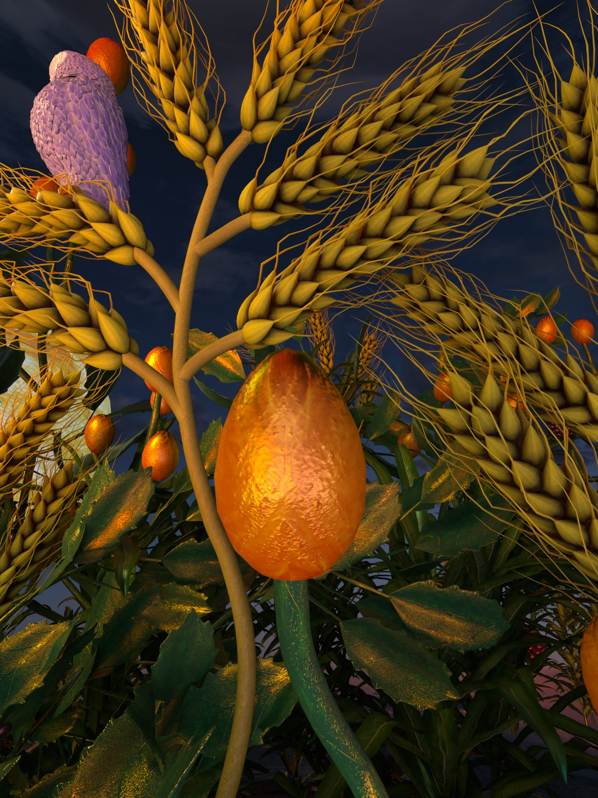
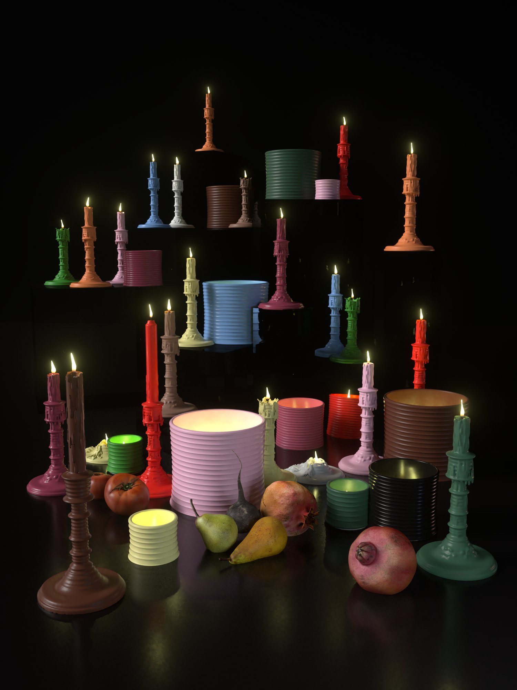
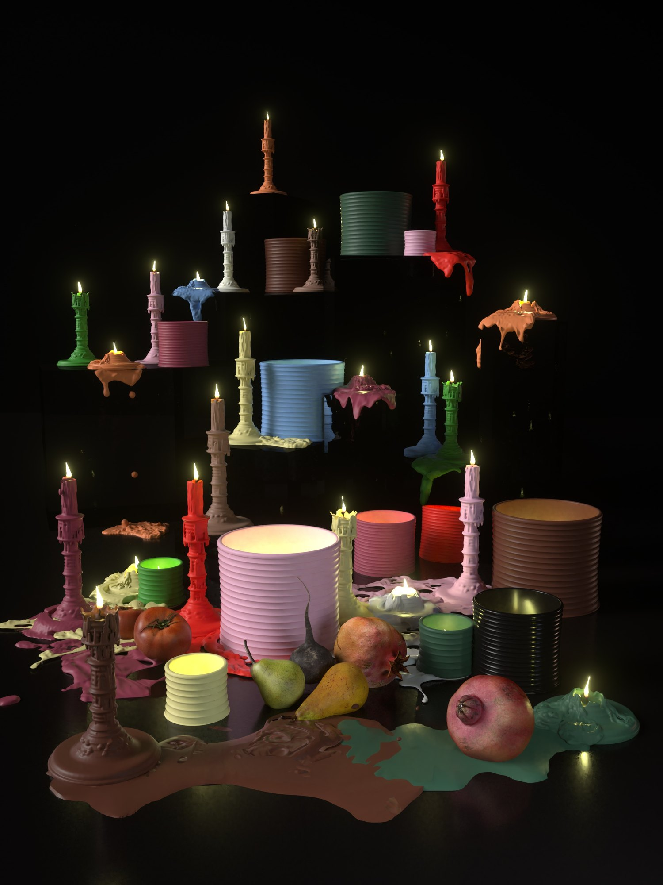
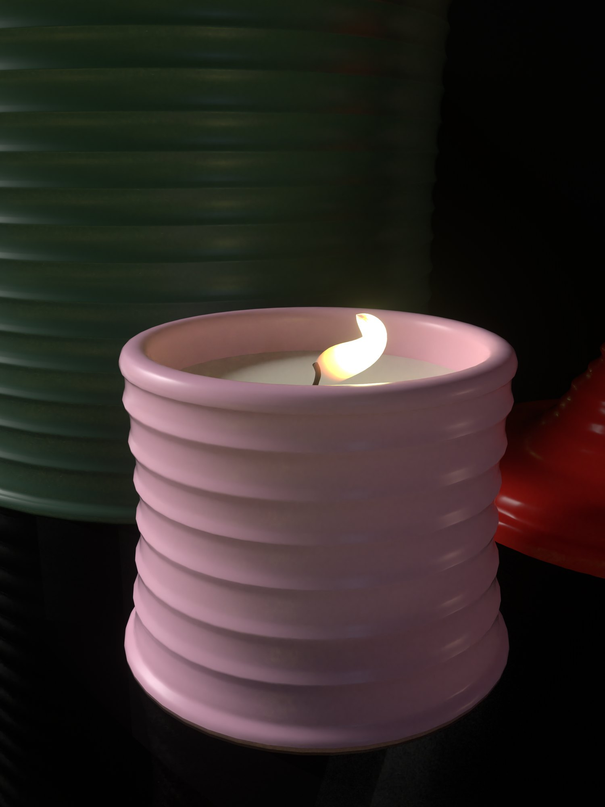
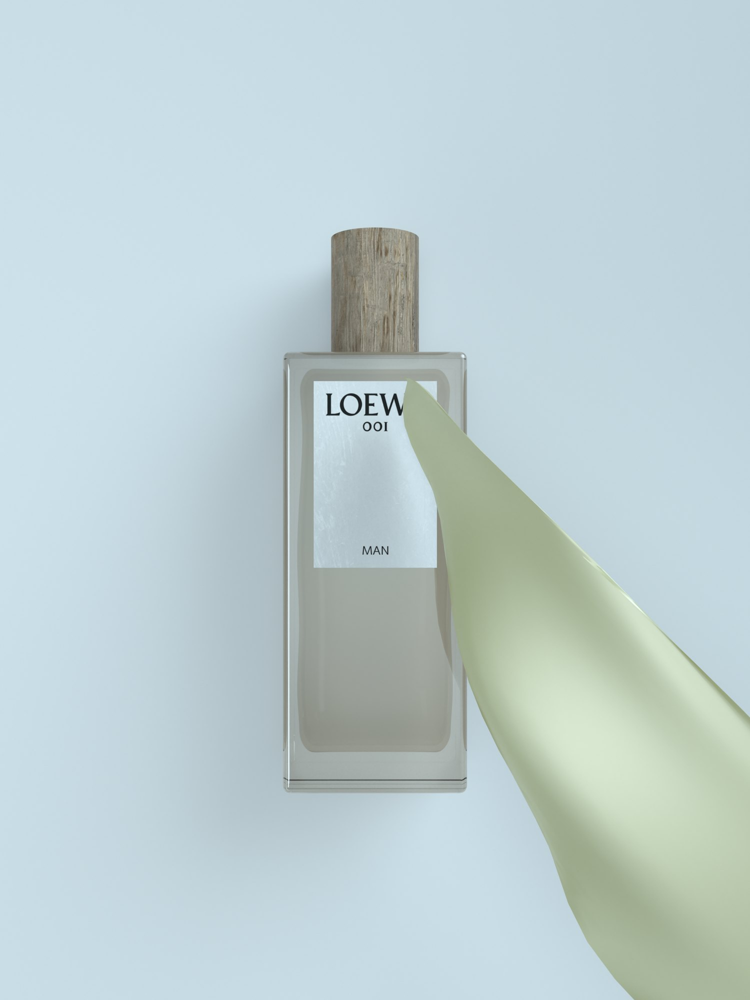
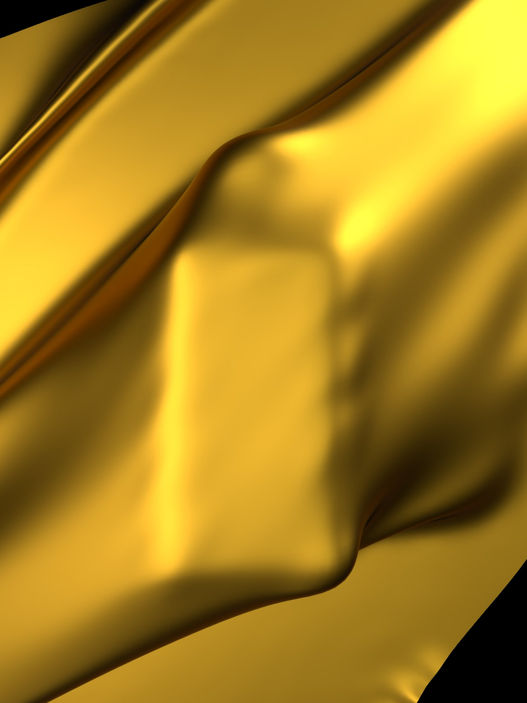
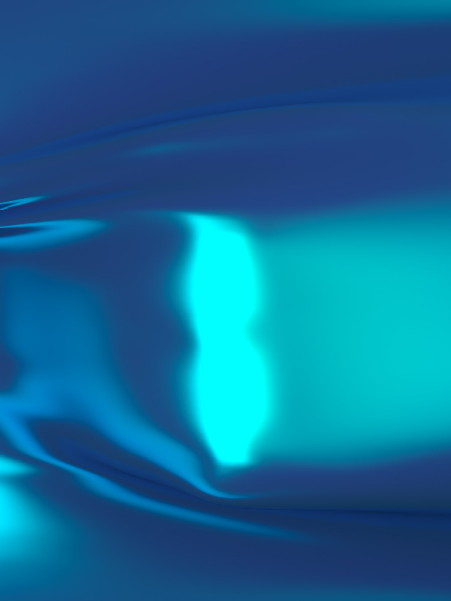
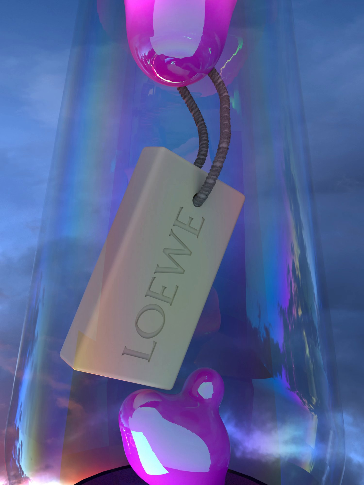
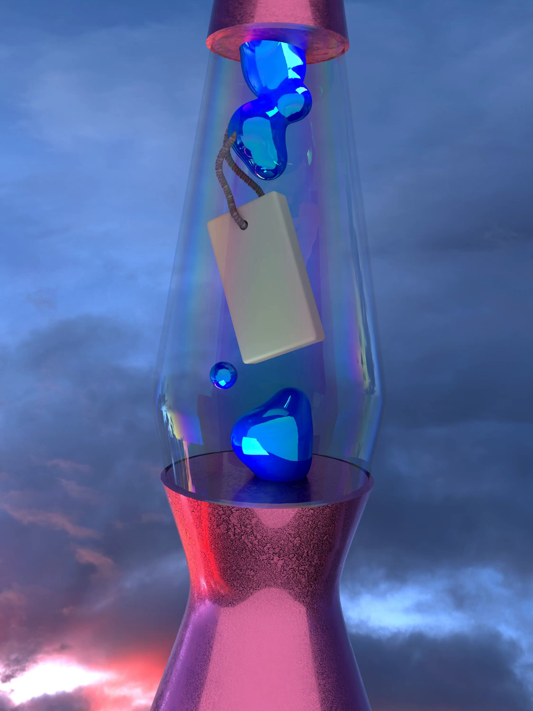
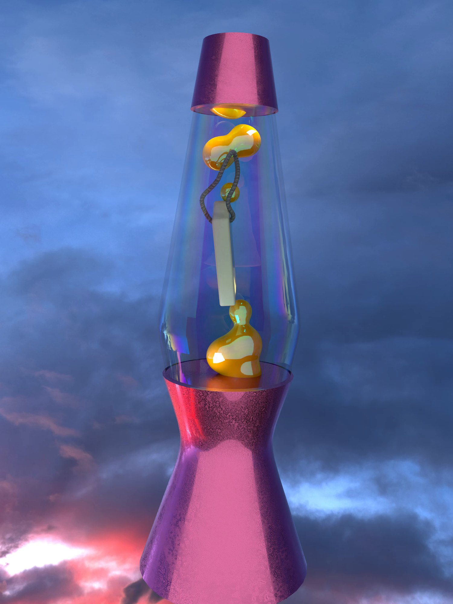

LOEWE
CHRISTMAS
Candles for LOEWE Perfumes, the owl for LOEWE. Shown on the brand’s Instagram, social media and website.
art direction by Bob Eaton
16:9 versions
Vertical versions, 9:16
4:5 versions
Stills















3D models from the scenes — drag to rotate